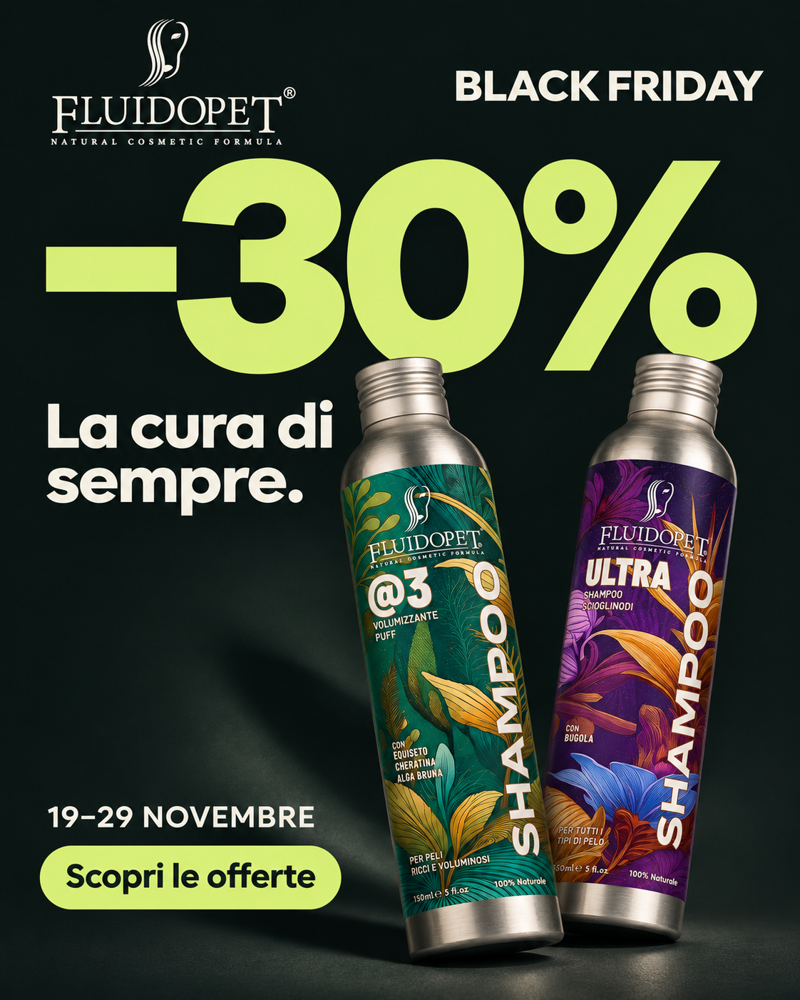
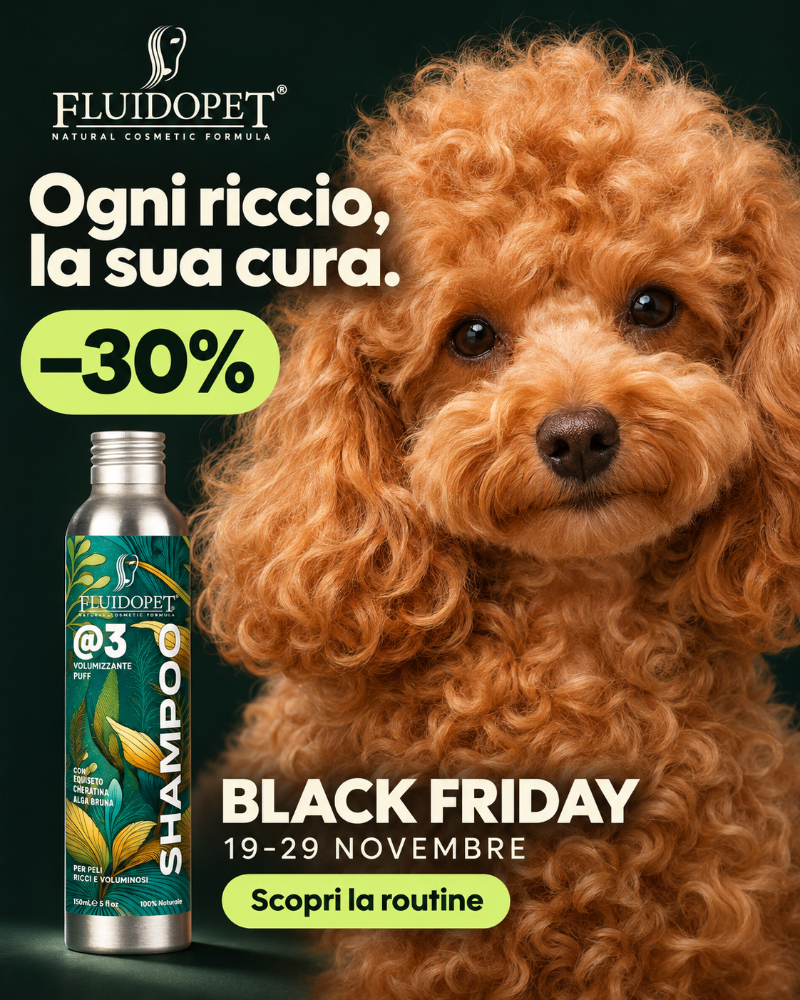
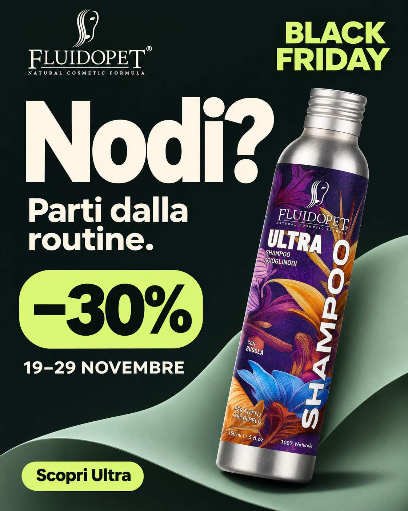
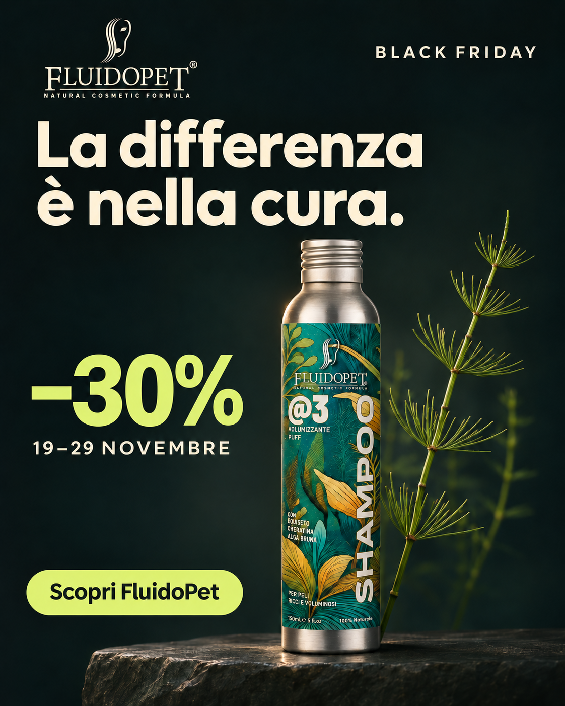
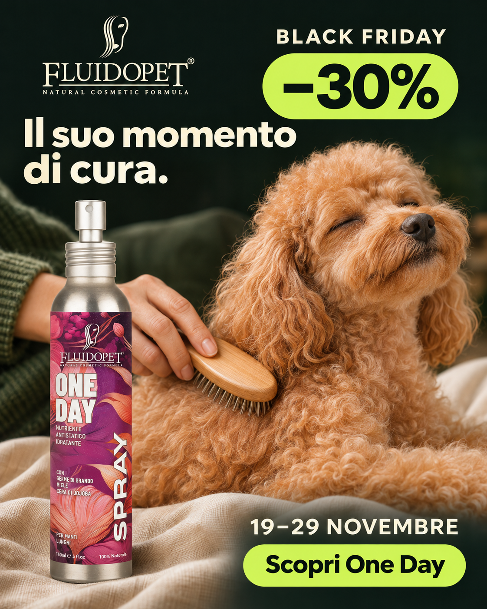
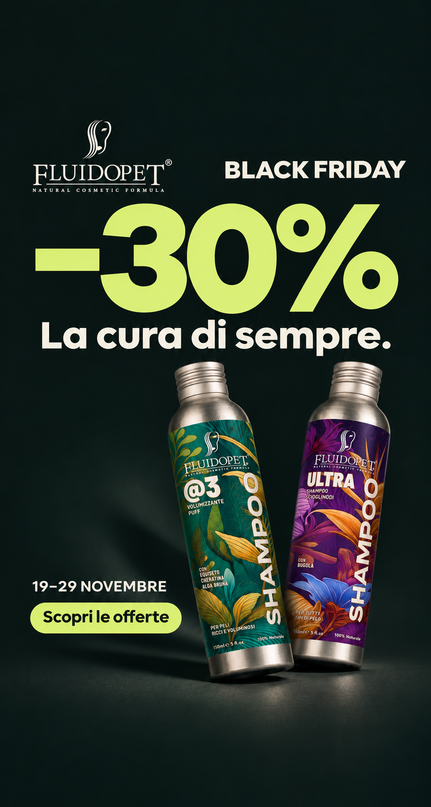
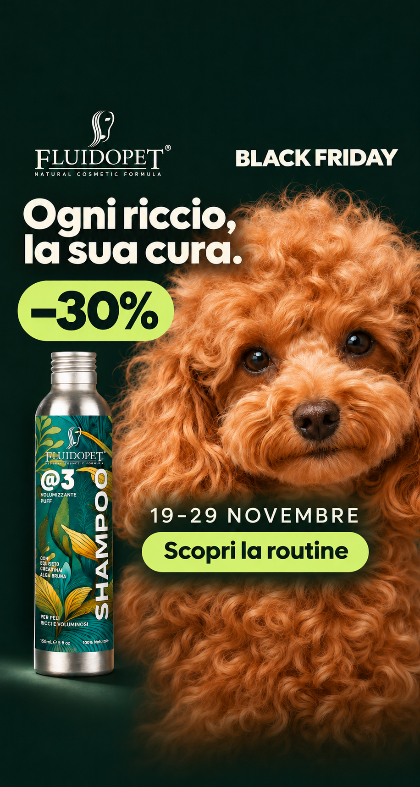

01 / Offerta immediataScarica PNG ↗
Offer First
Per l’apertura della promozione e i messaggi più diretti.
Scelta creativa
Lo sconto guida la lettura. Due flaconi grandi rendono subito riconoscibile la categoria.
Una nuova serie di reference pensate per la lettura su smartphone: immagini dominanti, messaggi brevi e offerta immediata.

Per l’apertura della promozione e i messaggi più diretti.
Lo sconto guida la lettura. Due flaconi grandi rendono subito riconoscibile la categoria.

Per raggiungere chi vive con un barboncino o un cane dal pelo riccio.
Sguardo e texture del pelo catturano l’attenzione; il prodotto collega l’emozione alla routine.

Per introdurre Ultra attraverso il tema dei nodi.
Una domanda breve apre il messaggio. Il prodotto domina la scena senza mostrare risultati inventati.

Per raccontare il posizionamento naturale e professionale.
Flacone, luce e un richiamo botanico costruiscono la qualità percepita. L’equiseto richiama il pack Puff.

Per raccontare One Day attraverso un momento quotidiano.
Il gesto della spazzolatura e il cane rilassato danno un contesto alla cura. Un solo prodotto in primo piano.

Adattamento della promozione al formato Stories.
Il blocco di messaggio scende nella fascia centrale. La scena prosegue sopra e sotto per accogliere l’interfaccia.

Adattamento del visual principale al formato Stories.
Il volto rimane centrale. Data e invito all’azione sono rialzati e leggibili sotto il muso.
Curly Care come visual principale, Offer First per la comunicazione più diretta della promozione. Le altre tre proposte ampliano i messaggi con bisogno, prodotto e routine. Sono ipotesi creative da confrontare, senza previsioni di rendimento.
Queste immagini sono reference creative generate con AI a partire dal logo fornito e dai packshot dei prodotti. Per gli esecutivi utilizzare logo e packshot originali, Outfit e DM Sans, impaginando a 1080 × 1350 e 1080 × 1920. I PNG conservano la risoluzione nativa della generazione.
Indicazioni per la grafica e calendario →
Prompt completi delle reference →